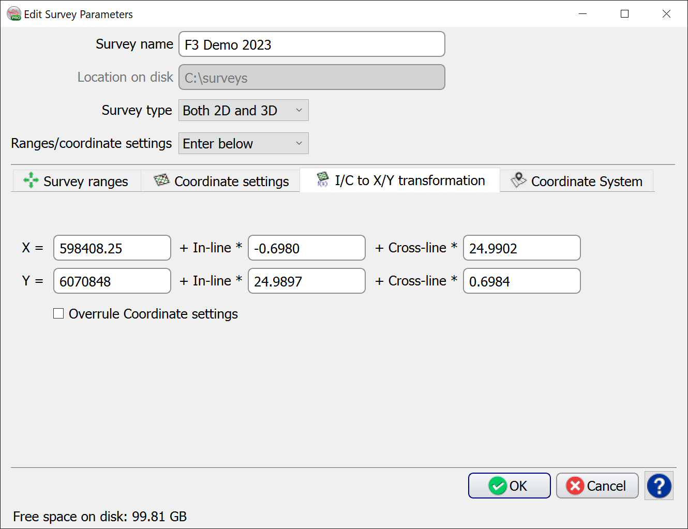

In this I/C to X/Y Transformation tab, the exact transformation can be specified. This method is more accurate than using the Coordinate Settings method, due to the absence of possible rounding-up errors. It is also possible to check the 'Overrule Coordinate Settings' option.
